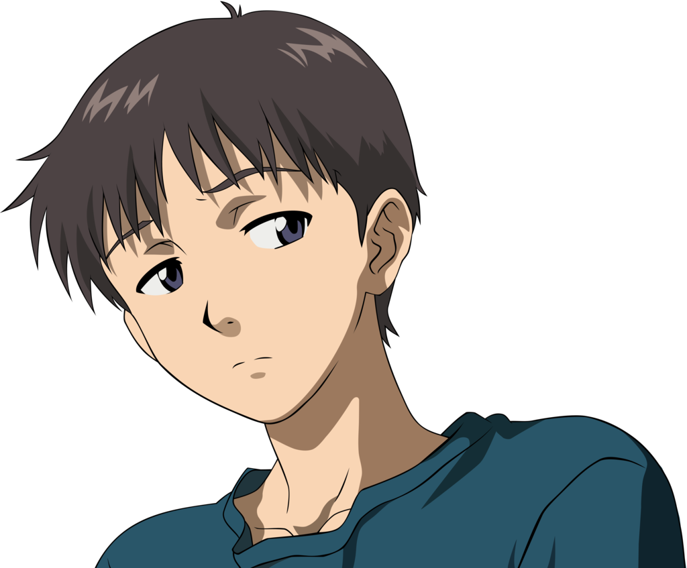
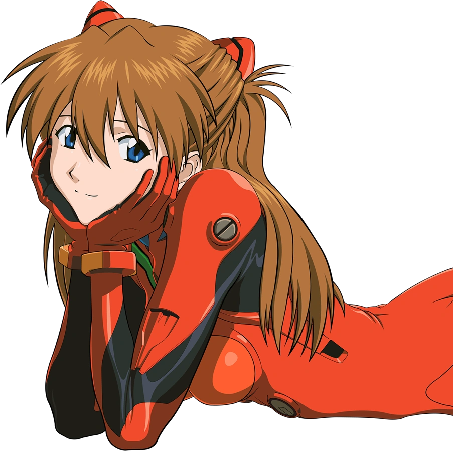
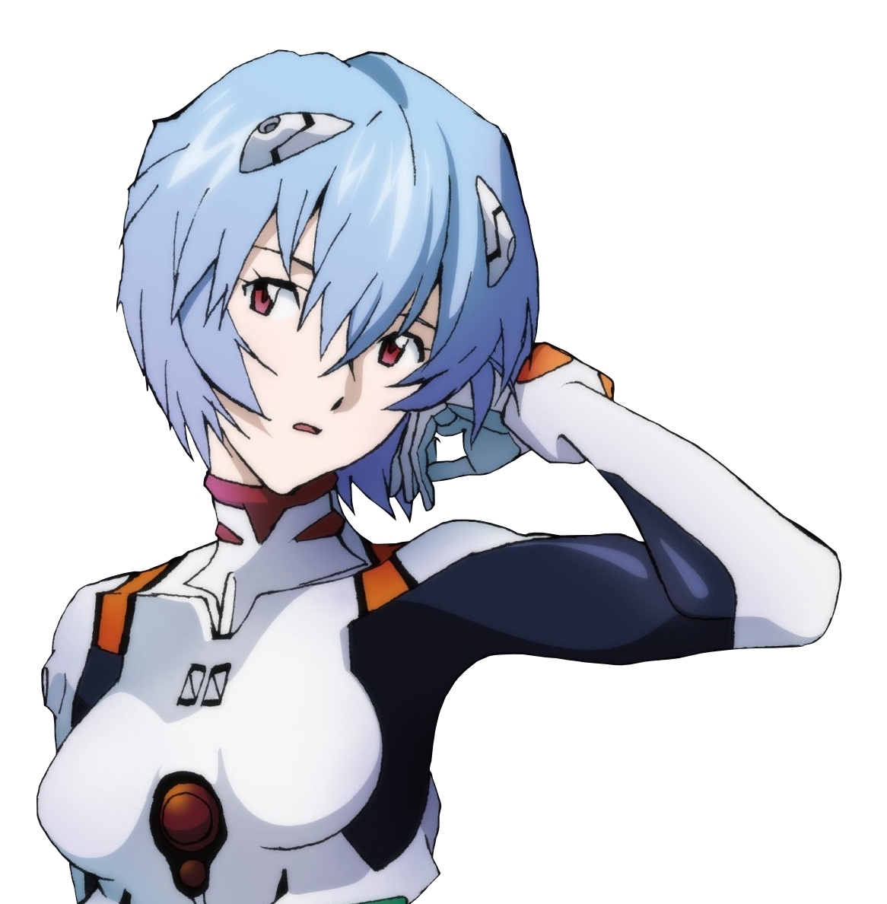

Shinji Ikari
TERCER NIÑO
Shinji es hijo de la bioingeniera Yui Ikari y del jefe de la organización NERV, Gendo Ikari.
Tras el fallecimiento de su madre, su padre lo abandonó, y vivió durante 11 años con su sensei. Sin embargo, su vida dio un giro inesperado cuando fue convocado a Tokio-3 para pilotar la Unidad-01 y enfrentar a los Ángeles.
Asuka Langley Soryu
SEGUNDO NIÑO
Asuka es una piloto de Evangelion excepcional. De nivel semejante al de Shinji, ella se ufana de ser piloto de EVA. Tiene un alto nivel de sincronización, superando al de Shinji hasta el episodio 16.
Rei Ayanami
PRIMER NIÑO
Rei Ayanami es el "Primer Niño" designada para pilotar la unidad prototipo Evangelion-00.